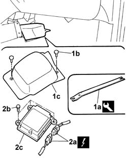

5580C14 air bag ecu - r+r
- Path
- Procedures > 55 ELECTRICAL EQUIPMENT > 5580 SPECIAL ACCESSORIES > 5580C air bag system > 5580C14 air bag ecu - r+r
- Kind
- repair procedure (removal / refitting; the operation number is the code)
- Applies to
- all engines; all production periods
- Interactive page
- https://sloeber94.github.io/elrnDB-fDbl/en/#/2584971
Applies to: all engines; all production periods
Applies to: all engines; all production periods
 Removing
Removing
 Refitting
Refitting1. Use tool (1a) to prise open studs (1b) and remove control unit protection (1c).
 | Name | Country |
|---|---|---|
1a | Scraper blade | 1.878.077.000 |
2. Disconnect electrical connectors (2a), unscrew retaining bolts (2b) and remove air bag control unit (2c).
 | Name | Connector |
|---|---|---|
2a | Air Bag control unit |

Applies to: all engines; all production periods
Refitting
RemovingFollow these precautions:
Fit the air bag control unit and secure with bolts.
Connect the Air Bag control unit electrical connection.
| Name | Connector |
|---|---|---|
- | Air Bag control unit |
Fit the airbag control unit and secure with the studs.
Connect the battery leads.
Check system operation using an Examiner tester.